AI Academy · Level 2 · Grade 7 · Week 36 · Student lesson
Capstone Expo
Learn to understand, design, build, test and explain AI systems responsibly.
Project: Transparent Book Recommender
Before you start
Weeks 32–35: defend a requirement, trace, test and limitation.
Plan time to read, investigate and explain. Keep predictions separate from observations.
Student lesson · 1 of 14
Your mission
Your learning target
I can defend an application using reproducible evidence.
I can explain failures and limits honestly.
I can demonstrate a new case without hidden help.
Remember before reading
Close your notes first. A rough first answer helps us choose the right starting point; it is not a score for your ability.
Without opening the old lesson, explain one key idea from Improve and Challenge. Give an example and a mistake that the idea helps you avoid.
Without opening the old lesson, explain one key idea from Build the Recommender. Give an example and a mistake that the idea helps you avoid.
Without opening the old lesson, explain one key idea from Agents and Tools. Give an example and a mistake that the idea helps you avoid.
After trying, check the relevant lesson or ask your teacher. Change the part of your explanation that the evidence shows was wrong.
Week 36: Capstone Expo
Ownership is demonstrated by a fresh recommendation and evidence-based defense.
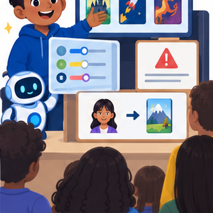
THINKER MISSION
Demo, calculate, critique, and answer an unseen user case.
Thinker name and date:
Readiness for the connected explanation
What makes a project result reproducible?
This week’s end goal
By the end, I can defend a complete recommendation with validation, eligibility and reproducible ranking.
Student lesson · 2 of 14
Notice the evidence
PICTURE STORY
Notice → Predict → Explain
Begin with visible evidence. Do not explain more than the picture and information support.
MYSTERY
The learners must use capstone expo to solve a problem. What information do they have? What decision or calculation do they make? What would count as evidence that it worked?
Three observations (what you can point to):
My prediction and the clue supporting it:
A closer explanation
Finish the fictional activity chooser with a short evidence-based presentation and a reproducible handover. Show the purpose, contract, pipeline, one ordinary trace, one boundary or failure case, improvements and remaining limits. A working demonstration supports a software claim, not a claim of proven learning benefit.
Student lesson · 3 of 14
See how it works
VISUAL MECHANISM
Input → Process → Output
Trace the information. At each stage, ask what changed and how you could test it.
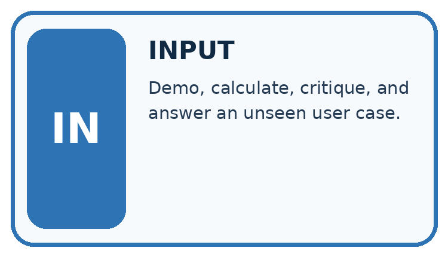
↓
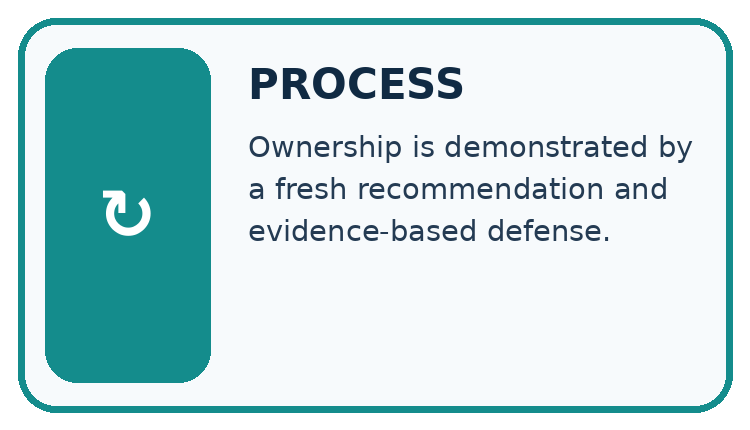
↓
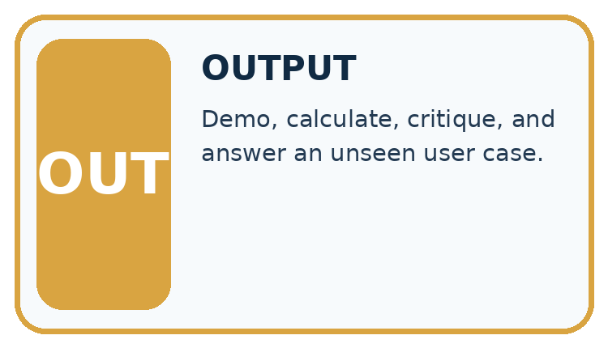
Which stage could fail even when the other two are correct? Explain:
A closer explanation
report = {"supplied": 4, "accepted": 3, "rejected": 1,
"eligible": 2, "selected": "A", "score": 8}
assert report["accepted"] + report["rejected"] == report["supplied"]
assert report["eligible"] <= report["accepted"]
print(report["selected"], report["score"])Follow the evidence
The example report prints A 8 and its counts are internally consistent. These checks do not prove A is the correct winner; the input records and scoring trace are also needed. Keep raw fictional data, source code, settings, test results and change log together.
Explain a result so someone can check it
A useful handover joins a claim to its evidence. Show the fictional input records, the policy and version, which records passed validation, which met the time limit, the scores and any tie decision. Then show the report. Its counts should agree, but consistent counts alone do not prove the selected item is correct. Include an earlier failure and repair, and separate demonstrated software behaviour from educational benefits that have not been measured.
Connect the picture and the explanation
Point to the input, the deciding step and the result in this week’s visual. Explain the same step in ordinary words. A picture helps when you can say what each part represents.
Student lesson · 4 of 14
Compare the cases
CASE GALLERY
Four Tests, Four Kinds of Evidence
A system is not understood until it survives more than one comfortable example.


NORMAL CASE: predict and name evidence. BOUNDARY CASE: predict and name evidence.


MISSING INFORMATION: predict and name evidence. TRANSFER CASE: predict and name evidence.
Which case is most likely to reveal a hidden assumption? Why?
Change one thing in the pictured case
Change: An authorised repair converts D’s interest to integer 4.
Prediction: D becomes eligible and scores 9, so it wins.
Reason: The evidence-backed input repair changes validation and then ranking; record this as a new case/version.
Student lesson · 5 of 14
Words that unlock the idea
VOCABULARY LAB
Words You Can Use to Reason
A definition matters when you can recognize the idea, use it, and contrast it with a near-miss.
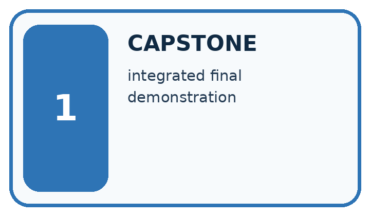
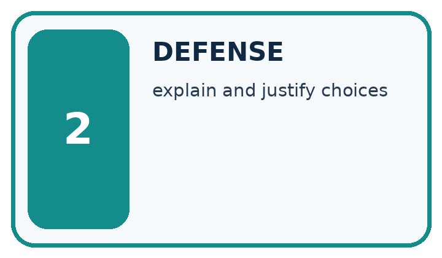
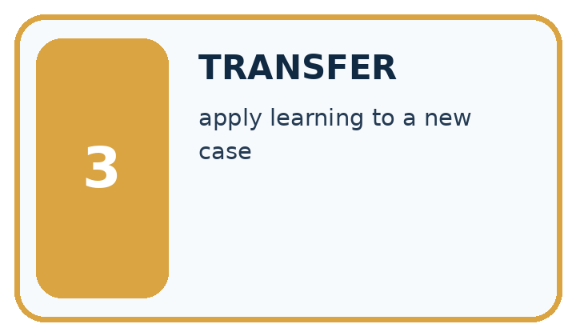
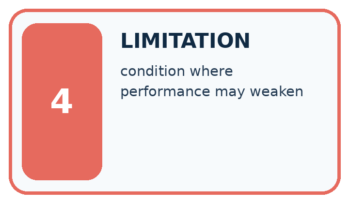
| Word | My own example | Not this / boundary |
|---|---|---|
| capstone | A final project combining skills and evidence developed across the course. | |
| defense | An explanation of a project decision supported by evidence and an account of its limitations. | |
| transfer | Apply an idea or skill to a new case rather than copy the worked example. | |
| limitation | A condition or missing capability that restricts what a result can establish or a system can safely do. |
Words used in the closer explanation
| Word | Meaning |
|---|---|
| Evidence bundle | The records needed to check a project claim |
| Demonstration | Showing the application on specified inputs |
| Handover | Giving another person enough information to use or check the work |
Student lesson · 6 of 14
Follow a worked example
WORKED EVIDENCE
Reason Step by Step
Predict first. Then check each step. A correct answer without visible reasoning is incomplete evidence.
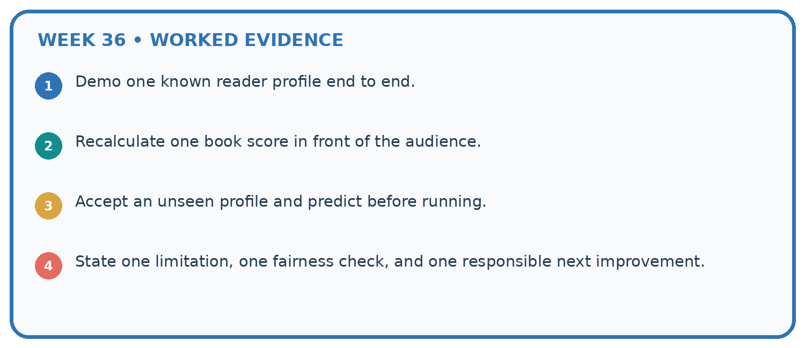
1. Demo one known reader profile end to end.
2. Recalculate one book score in front of the audience.
3. Accept an unseen profile and predict before running.
4. State one limitation, one fairness check, and one responsible next improvement.
Recalculate, retrace, or restate the reasoning in your own representation:
CHECK Did the evidence answer the exact question? Did the total, path, or source record stay consistent?
A closer explanation
Learn from the worked case
Cover the result before checking it. Say what is given, choose the procedure, and follow one step at a time. Then uncover the result and explain your first mismatch. Ask why a step is allowed, not only what number it produces.
A pictorial worked case: Capstone Expo
A fictional team presents its transparent book recommender on a reserved catalogue.
The facts we will use
Request maximum 120 pages; score=2×interest+illustrated, where illustrated is 1 for True and 0 for False; tie by ID.
A pages120 interest3 True; B pages100 interest4 False; C pages121 interest5 True; D pages90 interest"4" True. Numeric fields require exact integers.
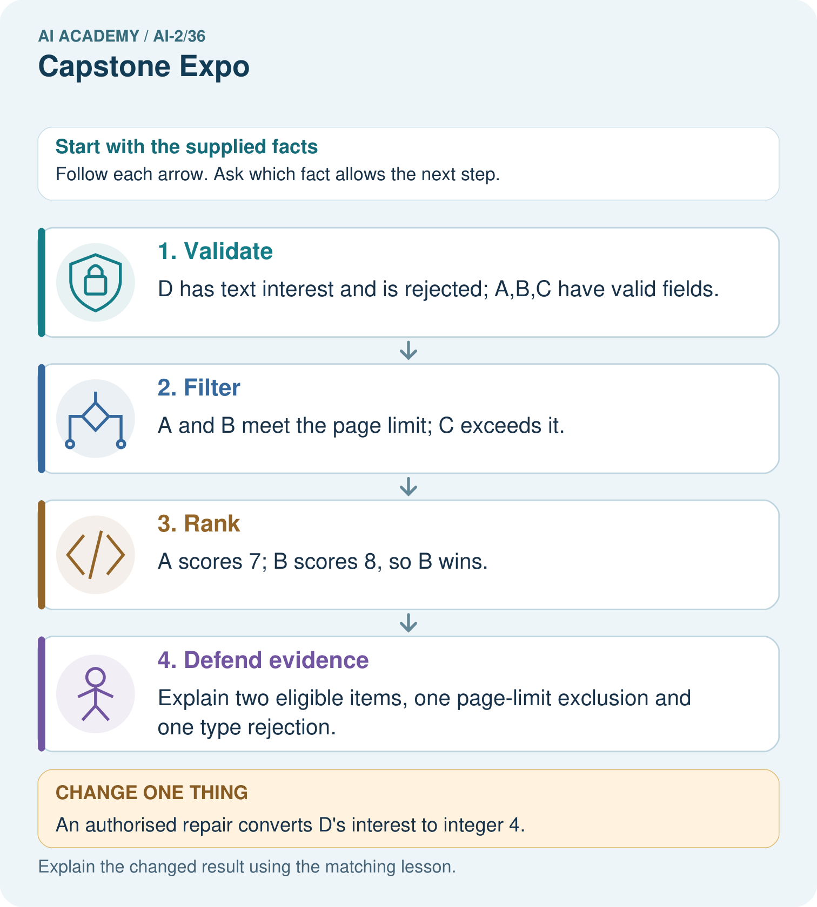
Read the picture one step at a time
Why this result follows
A presentation should let someone rebuild the result from the stated contract. A’s equality is accepted; D is not silently converted; C’s high preference score cannot override the page requirement. Reversing rows must preserve B because it has the unique highest eligible score. Keep the reserved case distinct from practice demonstrations.
What this example does not establish
A defensible algorithmic trace does not prove B will be liked or that classroom learning improved.
Student lesson · 7 of 14
Find and repair a mistake
ERROR DETECTIVE
Compare → Diagnose → Repair
Do not patch the answer. Find the earliest unsupported assumption, wrong step, or weak evidence.
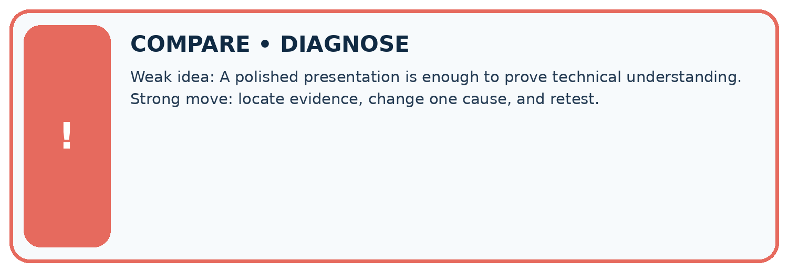
| Evidence record | Expected | Actual | Likely cause / next test |
|---|---|---|---|
| normal case | works | ||
| boundary case | stated rule | ||
| missing input | safe response | ||
| fresh transfer | generalizes |
Repair one cause. Why is this repair better than changing several things?
A closer explanation
The final independent task must be attempted before hints. Record support honestly and use a new case after support. Keep teacher answers separate from student materials and do not publish private credentials or real student records in the handover.
Student lesson · 8 of 14
Practise together
LOGIC STUDIO
Trace Before You Run
Block code, pseudocode, tables, and diagrams are different ways to expose the same reasoning.

SET evidence_record PREDICT expected_result RUN one normal case and one boundary case COMPARE actual_result with expected_result IF different: locate first cause; change one factor; RETEST EXPLAIN result, limitation, and next safe step
Trace one input. Which line changes the state or chooses a path?
A closer explanation
A polished presentation can conceal missing evidence. Replace claims such as works for everyone with the exact requirements met, cases executed and known limitations. Show one prior failure and its repair rather than deleting it from the story.
Practise with less help: Check report consistency
Use workbook W2 for the connected example “Defending the data application”. First fill the input and rule boxes. Try the middle steps before asking for a hint. After a hint, try the next step yourself.
| Plan | Do | Check |
|---|---|---|
| What is given? Which rule or procedure applies? | Record each intermediate step. | Does the result follow? What remains unknown? |
Explain your trace to a partner. Your partner points to one step to check. Swap roles on the next case. Each person writes their own explanation.
Check your reasoning
Use the worked case for Defending the data application. Proposed explanation: “A successful run proves the conclusion”. Decide whether this explanation is supported. Point to the step or supplied fact that decides; explain your repair if needed.
Answer on your own before discussion. If you are unsure, say which step you need help with.
Explain the picture
Give the original winning ID, its score, and counts of eligible, excluded and invalid rows.
This is supported practice. Keep the separately named independent case for an attempt before feedback.
Student lesson · 9 of 14
Run the investigation
EVIDENCE LAB
Predict → Test → Record → Explain
Keep expected and actual results separate. Surprises are useful data when recorded honestly.
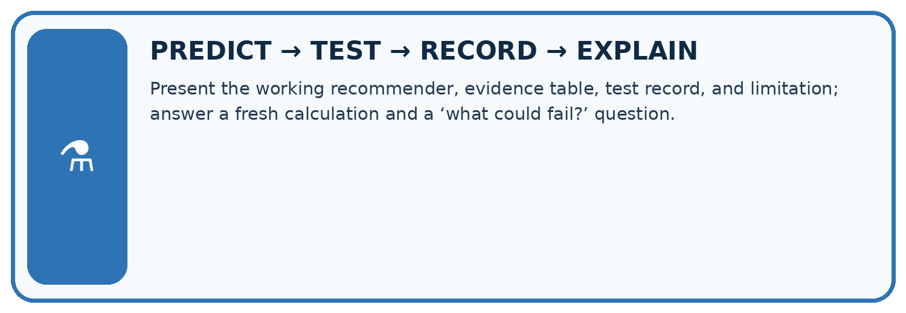
Present the working recommender, evidence table, test record, and limitation; answer a fresh calculation and a ‘what could fail?’ question.
| Test / input | Prediction | Actual | Evidence / calculation | Change or keep? |
|---|---|---|---|---|
| normal | ||||
| boundary | ||||
| missing | ||||
| fresh transfer |
What did the hardest test teach you that the normal test did not?
Plan → try → check
Before trying: what do I expect, and why? While trying: which step could first go wrong? Afterwards: what did I actually observe, and what should change? Keep “not run” if you only traced the procedure.
Student lesson · 10 of 14
Build your understanding
MASTERY
From Knowing the Word to Owning the Idea
Move upward only when you can produce evidence without copying the worked example.

1 • NAME: Define the concept without repeating the textbook.
2 • TRACE: Show the information, state, branch, calculation, or evidence path.
3 • APPLY: Solve a different example independently.
4 • CHALLENGE: Find a boundary case, counterexample, or unfair outcome.
5 • EXPLAIN LIMITS: Say when the result should not be trusted or used alone.
My strongest evidence of independent understanding:
Student lesson · 11 of 14
Connect your project
CUMULATIVE PROJECT
Transparent Book Recommender
Every week adds one inspectable piece. The system must show how it reached a result.
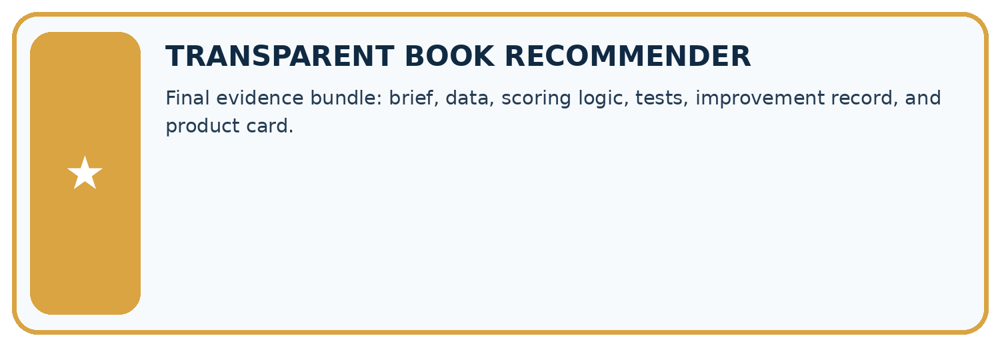
THIS WEEK’S CHECKPOINT Final evidence bundle: brief, data, scoring logic, tests, improvement record, and product card.
SYSTEM MAP Reader need → allowed inputs → transparent rule or score → ranked candidates → explanation → test record → human decision
What will you add, change, or verify in the project this week?
What should remain under human control?
RESPONSIBLE DESIGN Collect only necessary information. Show uncertainty and limits. Never confuse a ranking with a fact about a person.
Evidence for your project
Present the Transparent Book Recommender’s code, baseline, full-case traces, reserved results and limitations, without claiming fictional results as pupil work.
Student lesson · 12 of 14
Show what you know
INDEPENDENT MASTERY PROOF
Explain • Transfer • Test • Defend
Complete this page without copying the worked example. Your reasoning matters more than decoration.
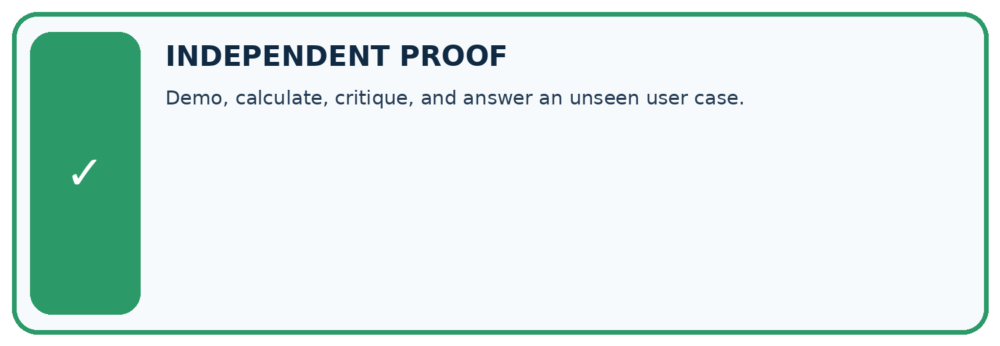
CHALLENGE Demo, calculate, critique, and answer an unseen user case.
1. My fresh example, trace, calculation, or design:
2. My evidence that it works (include a boundary or missing-data case):
3. One limitation, fairness concern, or situation needing human review:
SELF-CHECK □ I explained the mechanism □ I used evidence □ I tested a fresh case □ I named a limitation □ I can answer ‘why?’
Student lesson · 13 of 14
Study a complete case
Week 36 Worked case
Use the supplied details to practise the weekly concept before attempting the independent question. This case extends the illustrated lesson.
The situation
An expo claim says the recommender knows everybody's favourite book after twelve tests.
The question
Rewrite the defence.
Worked explanation
Explain trait-based ranking, report the twelve outcomes and limits, and demonstrate no-match handling. It cannot know unstated preferences.
Explain it in your own words
Which detail supports the answer, and why does it matter?
Trace the supplied case visually
Defend a transparent recommender
| Evidence or stage | Value or result |
|---|---|
| Inputs | Explain necessary data |
| Logic | Show a score and tie decision |
| Tests | Report successes and failures |
| Limits | Demonstrate a missing or uncertain case |
An expo claim says the recommender knows everybody's favourite book after twelve tests.
Rewrite the defence.
Explain trait-based ranking, report the twelve outcomes and limits, and demonstrate no-match handling. It cannot know unstated preferences.
Student lesson · 14 of 14
Try a new case independently
Independent case: Defend a new case independently
Limit is 10. A has minutes 10, fun 2, learning 4; B has 9,3,2; C has 11,5,5; D has 8,"4",2. Validate, rank, give counts, explain the winner, then reverse the input order. Present without hints.
Attempt this case before feedback. Record any help. Earlier examples below are further practice; a case already practised with feedback cannot establish fresh transfer.
Week 36 Independent application
Close the worked explanation. Apply the idea to this different question without copying.
Your demo recommends the right book once. An audience member asks why they should trust it. Name evidence and one limitation you should present.
My answer, with a trace, calculation or supporting evidence
Create and test
Change one relevant detail. Predict the result before testing. Include a boundary or missing-information case when it helps reveal a limit.
My changed input and expected result
Connect to your project
Final evidence bundle: brief, data, scoring logic, tests, improvement record, and product card.
The evidence I will keep
Your teacher has the independent answer and scoring criteria. Complete the matching workbook week to keep your practice evidence together.
Transfer practice from the original programme
Present a recommender that gets 8/10 final requests right. One failure invents a title; another violates a hard page limit. Is '80%, ready for everyone' justified? Propose release criteria.
Use feedback to improve
Attempt the independent case before hints. Record whether you worked alone, used a hint or followed a model. After feedback, fix the first unsupported step and explain why it changed. A later check uses a changed case, not a copied answer.